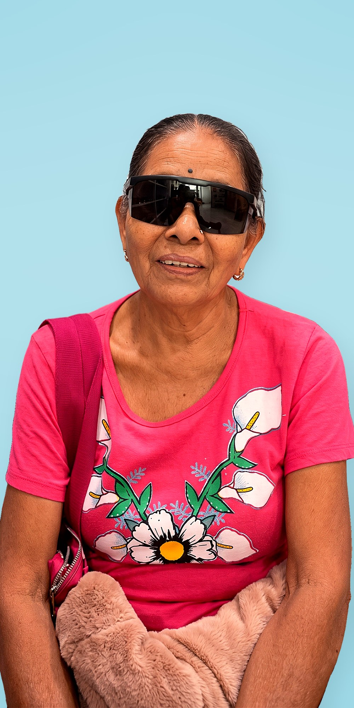
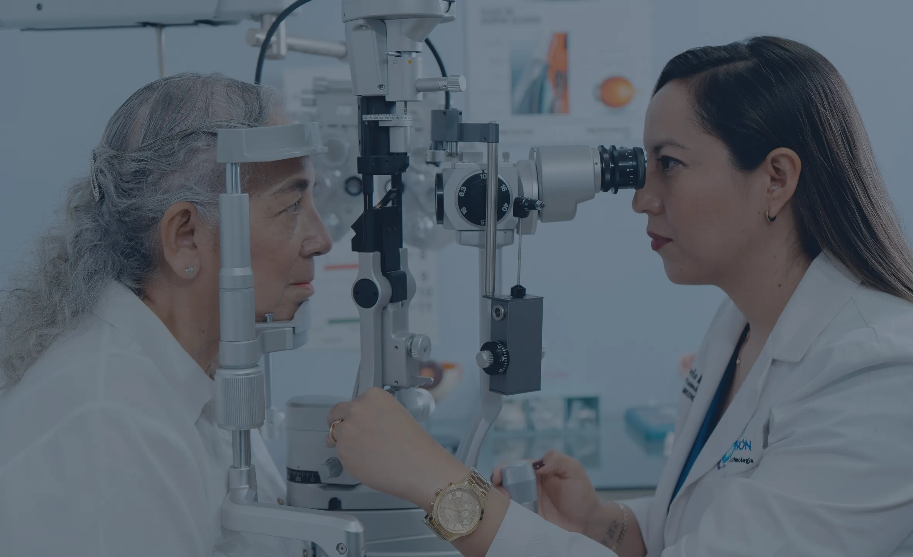

Consulta
Tu oftalmólogo revisa la carnosidad.


Pterigión · carnosidad
Es un crecimiento de tejido sobre el ojo relacionado con el sol, el viento y el polvo. Agenda tu consulta y revisamos qué tratamiento necesitas.

Testimonio · María de los Ángeles Chávez · paciente OftavisiónEl pterigión, conocido como carnosidad, es un crecimiento de tejido sobre la superficie del ojo. Se relaciona con el sol, el viento y el polvo. Tu oftalmólogo lo revisa y, si lo necesitas, se retira con cirugía.

Todo en tu misma sede, con un equipo que te explica cada paso.
Tu oftalmólogo revisa la carnosidad.
Evaluamos su tamaño y tu superficie ocular.
Cirugía, cuando tu médico la indica.
Seguimiento después del tratamiento.
También revisamos catarata y otros problemas de la vista en la misma consulta.
Es un crecimiento de tejido sobre la superficie del ojo, conocido como carnosidad.
Se relaciona con el sol, el viento y el polvo.
No. Tu oftalmólogo te indica si necesitas cirugía.
Atendemos pterigión en nuestras clínicas. Elige tu sede y te contestamos por WhatsApp.